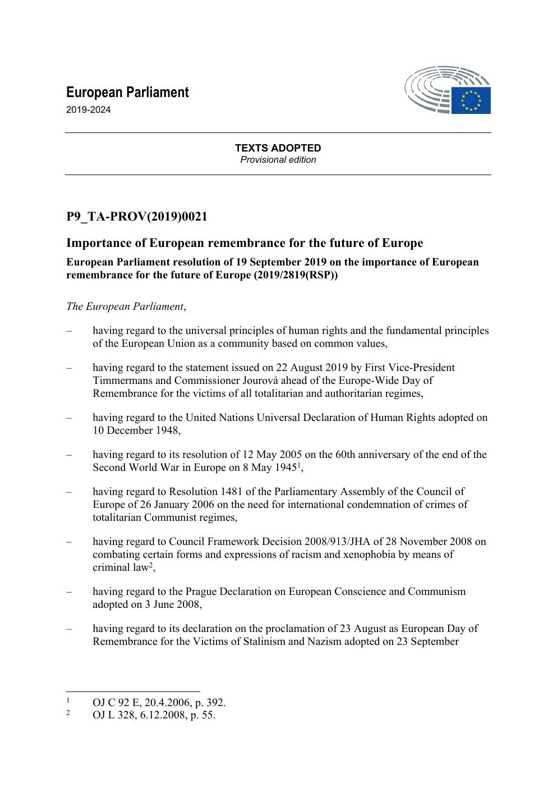
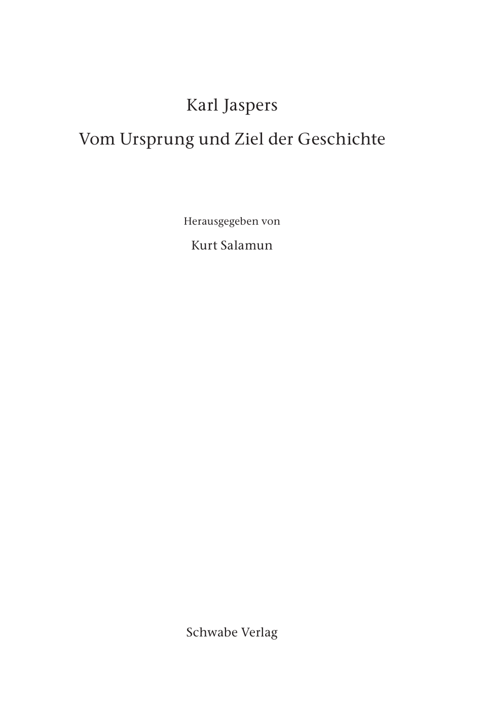
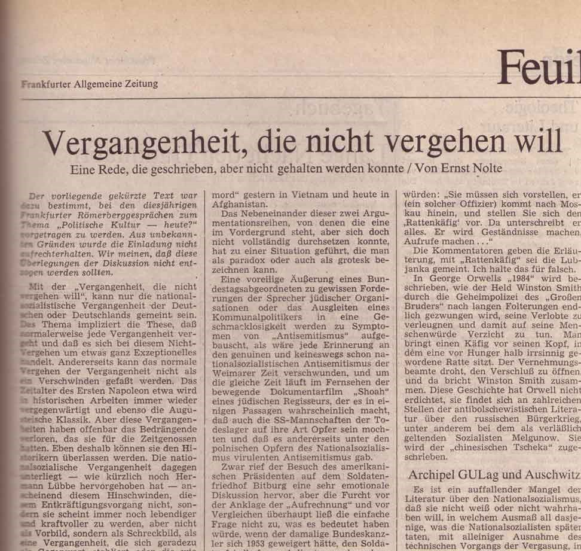
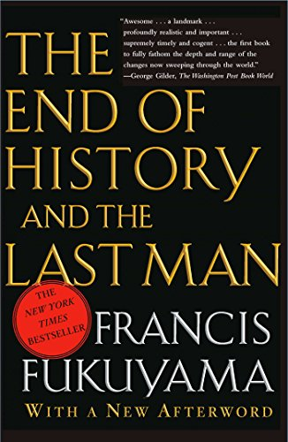
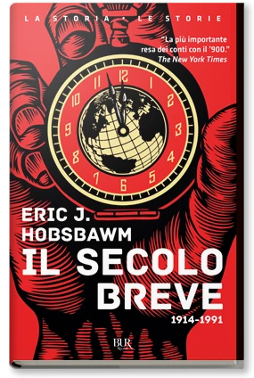
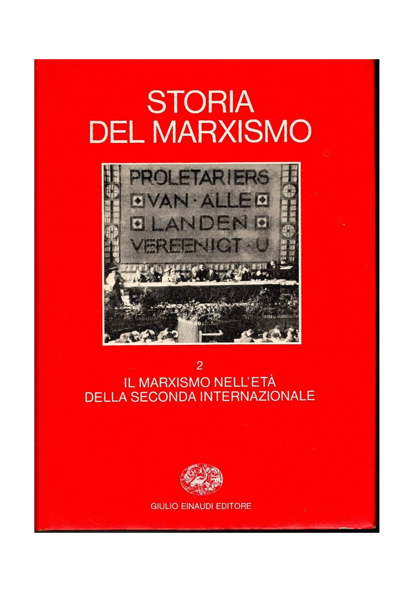
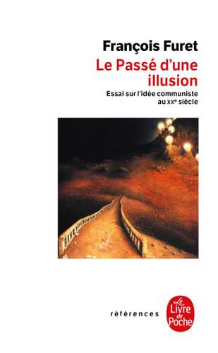
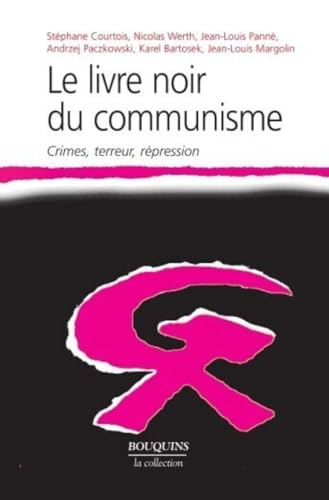
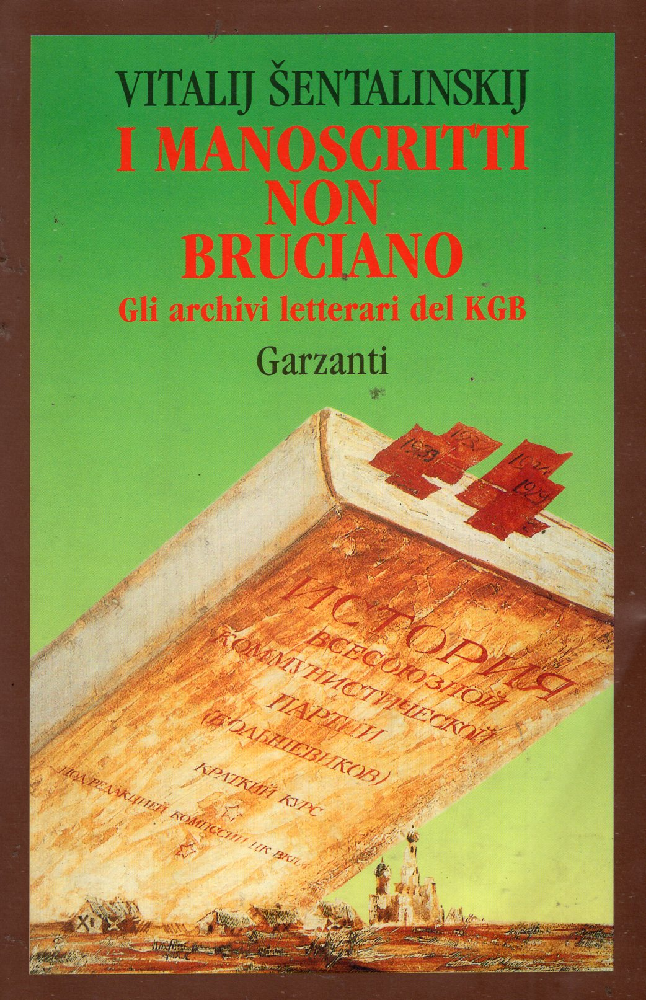
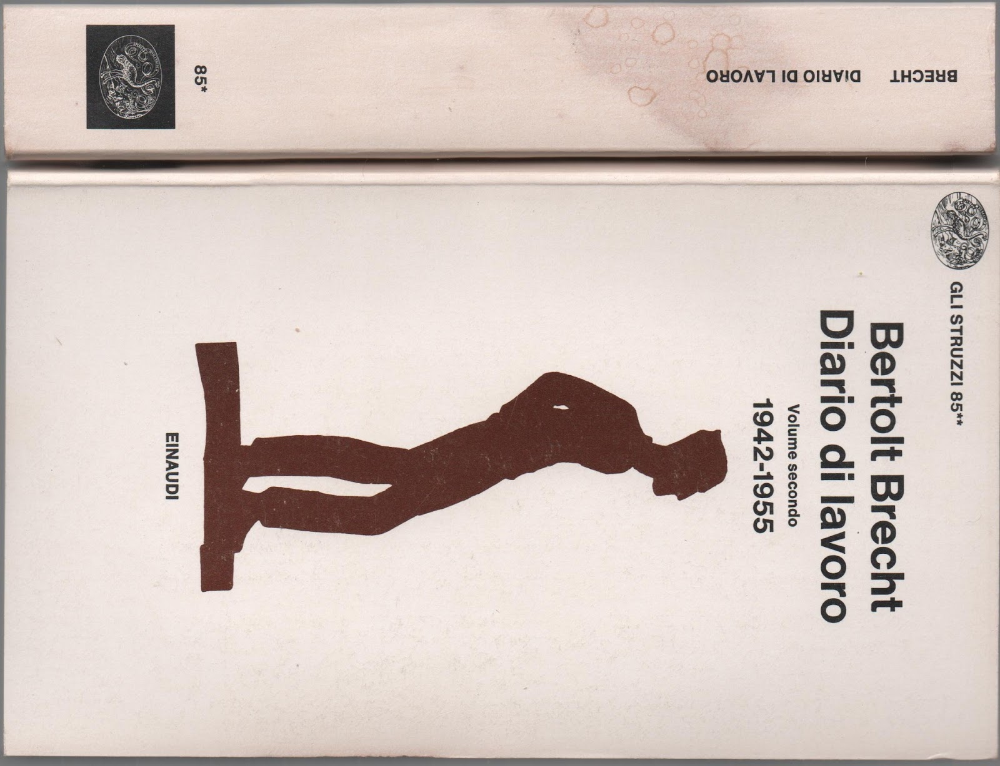

1:12:40 · 12 OPERE
Risoluzione Parlamento Europeo su nazismo e comunismo.
Il filo del discorso
Il contributo discute la risoluzione europea del settembre 2019 sulla memoria storica e propone una genealogia politica della comparazione fra nazismo e comunismo. Dr Divago teme che il ricordo delle vittime diventi uno strumento per imporre categorie storiche e orientare il presente. Il filo collega la visita di Reagan a Bitburg, la controversia fra gli storici tedeschi, la fine del blocco sovietico, alcuni libri di grande circolazione e le iniziative europee sulla memoria.
Leggi la sintesi completaRiduci la sintesi
Questa sequenza è la sua interpretazione: vicinanza cronologica e somiglianza di formule non dimostrano da sole una regia unica o un identico intento dei protagonisti. Jaspers introduce il rapporto fra comprensione della storia e responsabilità. Seguono Nolte, Fukuyama, Hobsbawm, Furet e Il libro nero del comunismo: opere, curatele e interventi giornalistici distinti, che il relatore mette in dialogo per contestare la trasformazione delle vittime in cifre di una polemica. Il problema non viene risolto né negando i crimini documentati dei regimi comunisti né usando una somma come sostituto dell’analisi di contesti, cause e responsabilità. Il secolo breve è del 1994 e non inaugura la precedente sequenza ottocentesca di Hobsbawm; il libro di Fukuyama è del 1992, dopo il saggio del 1989. La lettura degli atti richiede distinguere istituzioni e forme del documento. La risoluzione PACE del gennaio 2006 fu adottata; fu la distinta raccomandazione a non raggiungere i due terzi. Consiglio d’Europa e Unione europea non coincidono. La mozione congiunta del 2019 e il testo approvato dal Parlamento europeo sono passaggi distinti: la risoluzione esprime posizioni politiche e richieste, non costituisce da sola una condanna penale. Anche gli accordi del 2007 e la decisione quadro del 2008 contro razzismo e xenofobia appartengono a un altro iter. Negare l’esistenza di razze biologiche umane non elimina il fenomeno della discriminazione razzista. Il commento ai paragrafi sul patto Molotov–Ribbentrop, sull’integrazione europea e sulla Russia conduce alla questione di chi possa parlare del passato. Il controllo degli archivi e la critica della loro selezione rimangono necessari; l’apertura di documenti non dimostra però che un paese abbia esaurito ogni confronto con la propria storia. I diari di Brecht offrono infine una lettura dei rapporti fra borghesia, nazismo e dopoguerra, attribuita all’autore e al relatore. La conclusione rivendica una democrazia praticata attraverso partecipazione e discussione. La scheda conserva questo argomento e corregge i particolari che incidono sul percorso: Bergen-Belsen fu liberato dai britannici, e Reagan lo visitò prima del cimitero di Bitburg.
I libri nel discorso

Importanza della memoria europea per il futuro dell’Europa
Identificazione probabile
Note sul riferimento
Prima pagina · testi adottati, edizione provvisoria inglese del 19 settembre 2019; copia Platform of European Memory and Conscience: Testi adottati del Parlamento europeo, 19 settembre 2019, edizione provvisoria inglese P9_TA-PROV(2019)0021, prima pagina; copia conservata dalla Platform of European Memory and Conscience.
Prima pagina autentica del PDF di sei pagine: titolo, istituzione, riferimento 2019/2819 (RSP), data 19 settembre 2019 e diciture TEXTS ADOPTED / Provisional edition leggibili. Il riferimento PROV riguarda l’edizione provvisoria dei testi adottati: non è la mozione congiunta RC del 18 settembre e non viene presentato come l’impaginato definitivo della GU C171, 6 maggio 2021. Lingua e versione materialmente aperte nel filmato restano non accertate. Resa fedele a 120 dpi dell’intera pagina 1, senza ricostruzioni; il PDF completo resta privato.
Nel passaggio: 29.01–54.88 s: mozione congiunta e titolo espliciti; Nel passaggio: 2192.36–2200.95 s: data 19 settembre. I contenuti dei paragrafi 14, 15 e 22 corrispondono al testo adottato. La fonte è automatica; la versione materialmente consultata non è certificata.

Origine e senso della storia (Vom Ursprung und Ziel der Geschichte)
Note sul riferimento
Copertina: Karl Jaspers Gesamtausgabe I/10 ·Schwabe 2017 ·Kurt Salamun, curatore ·frontespizio
Frontespizio autentico intero della singol’opera nell’edizione critica Schwabe, Karl Jaspers Gesamtausgabe I/10:autore, titolo, Kurt Salamun e Schwabe leggibili. Il colophon del PDF dichiara 2017, ISBN 9783796534294. Il sito Fondazione menziona 2016:non uniformate arbitrariamente le date; qui si usa quella della fonte illustrata. È frontespizio moderno dichiarato, non copertina Piper 1949.
Autore e titolo tedesco Vom Ursprung und Ziel der Geschichte espliciti; opera distinta dalla Questione della colpa.

La questione della colpa
Note sul riferimento
Copertina: Raffaello Cortina
Schuldfrage e Jaspers espliciti nel tema della responsabilità tedesca; riuso dell’opera.

Vergangenheit, die nicht vergehen will. Eine Rede, die geschrieben, aber nicht gehalten werden konnte
Note sul riferimento
Copertina: Frankfurter Allgemeine Zeitung ·6 giugno 1986 ·facsimile autentico dell’incipit
Facsimile autentico fornito da1000Schlüsseldokumente/BSB München:titolo, sottotitolo, firma Ernst Nolte, testata FAZ e colonne iniziali. Il facsimile riproduce l’incipit dell’articolo, non l’intera pagina o il testo completo.
Nolte, FAZ, titolo tedesco e 6 giugno 1986 espliciti: articolo distinto dai libri dello storico.

The End of History and the Last Man (La fine della storia e l’ultimo uomo)
Note sul riferimento
Copertina: Free Press, 1 marzo 2006, 464 pagine, con nuovo poscritto. Prima edizione del libro 1992, distinta dall’articolo The End of History? del 1989.
Immagine autentica dell’opera, controllata visivamente; l’edizione di riferimento non è attribuita al filmato.
Fukuyama e La fine della storia e l’ultimo uomo espliciti; libro 1992 distinto dal saggio 1989 e dalla data 1991 del parlato.

Il secolo breve. 1914-1991
Note sul riferimento
Copertina: BUR · La storia / Le storie, 2014
Immagine autentica dell’opera, controllata visivamente; l’edizione di riferimento non è attribuita al filmato.
L’età degli estremi e Il secolo breve con Hobsbawm identificano la stessa opera; il titolo inglese non indica un libro diverso.

Storia del marxismo
Note sul riferimento
Copertina: Einaudi ·raccolta 1978–1982 ·sovracoperta delvolume2 illustrativa
Fotografia autentica intera della sovracoperta delvolume2, Il marxismo nell’età della Seconda Internazionale, con titolo generale e marchio Giulio Einaudi. È un volume illustrativo della raccolta complessiva citata, non l’affermazione che il relatore abbia citato quel particolarevolume. Conservata inprivato anche la fotografia dei5tomiconnumeri1,2,3*,3**,4.
Storia del marxismo, Einaudi e curatela Hobsbawm sono espliciti; raccolta collettiva, non tre volumi di autore unico.

Il passato di un’illusione. L’idea comunista nel XX secolo (Le Passé d’une illusion)
Note sul riferimento
Copertina: Le Livre de Poche, Références ·edizione 11 giugno 2003 ·ISBN 9782253904762
Copertina autentica intera scaricata dal catalogo ufficiale Hachette/Le Livre de Poche:François Furet, titolo, sottotitolo e marchio.Ristampa commercialedel 2003, copertina delcatalogocorrente; prima pubblicazione Laffont/Calmann-Lévy 1995, nessuna edizione attribuita al video.
François Furet, titolo e sottotitolo sul comunismo nel ventesimo secolo espliciti; originale 1995.

Il libro nero del comunismo. Crimini, terrore, repressione (Le Livre noir du communisme)
Note sul riferimento
Copertina: Robert Laffont, Bouquins ·1998 ·ISBN 9782221088616
Copertina autentica intera dell’edizione Bouquins 1998:nomi dei sei autori principali, titolo, sottotitolo, simbolo grafico e marchio Bouquins. ISBN riscontrato nel catalogo bibliotecario Mabibli, edizione 1998 distinta dalla prima 1997 e dall’edizione italiana Mondadori. Le valutazioni della prefazione non attribuite indistintamente a tutti gli autori.
Titolo italiano e francese, raccolta e ruolo di Courtois espliciti; opera 1997, non attribuite a ogni collaboratore tutte le tesi dell’introduzione.

I manoscritti non bruciano. Gli archivi letterari del KGB
Identificazione probabile
Note sul riferimento
Fotografia della copertina Garzanti 1994, esemplare Clexidra: Fotografia dell’esemplare Garzanti, Milano, 1994, ISBN 9788811738404, nel catalogo della Libreria Clexidra. Traduzione di Cristina Moroni dal manoscritto russo, come nel record Braidense. Edizione italiana della stessa opera, non edizione certificata nel video; non è la copertina di Curtis o Mestrovich.
Fotografia dell’esemplare Garzanti, Milano, 1994, ISBN 9788811738404, nel catalogo della Libreria Clexidra. Traduzione di Cristina Moroni dal manoscritto russo, come nel record Braidense. Edizione italiana della stessa opera, non edizione certificata nel video; non è la copertina di Curtis o Mestrovich.
Nel passaggio: 91 s: il relatore richiama il titolo I manoscritti non bruciano e ne descrive il lavoro su documenti d’archivio. L’autore non è pronunciato. Il catalogo della Biblioteca nazionale Braidense e la fotografia dell’esemplare Garzanti consentono una corrispondenza probabile con il libro di Šentalinskij, distinta dai libri omonimi di Curtis e Mestrovich.

Diario di lavoro / Arbeitsjournal · due volumi
Note sul riferimento
Foto originale · copertina del volume II e dorso del volume I: Einaudi, Gli struzzi 85, 1976: volume I, 1938–1942; volume II, 1942–1955, fino a pagina 1204. Foto originale con copertina del volume II e dorso del volume I, nella orientazione del sito di provenienza; non copertina separata del volume I.
Fotografia dei due volumi del Diario di lavoro Einaudi 1976, provenienza dichiarata. Il testo visibile del secondo volume reca 1942–1955, il primo è mostrato di dorso. Non si afferma di avere individuato in questa foto il passo del 1942 citato nel video.
Secondo volume Einaudi dei diari di lavoro e pagine del 1948 espliciti; riuso del contenitore.

Politica
Identificazione probabile
Note sul riferimento
Copertina: Bompiani · Testi a fronte, 2016 · a cura di Federico Ferri
Immagine autentica dell’opera, controllata visivamente; l’edizione di riferimento non è attribuita al filmato.
Aristotele e animale politico richiamano probabilmente Politica I,2; titolo dell’opera non pronunciato.